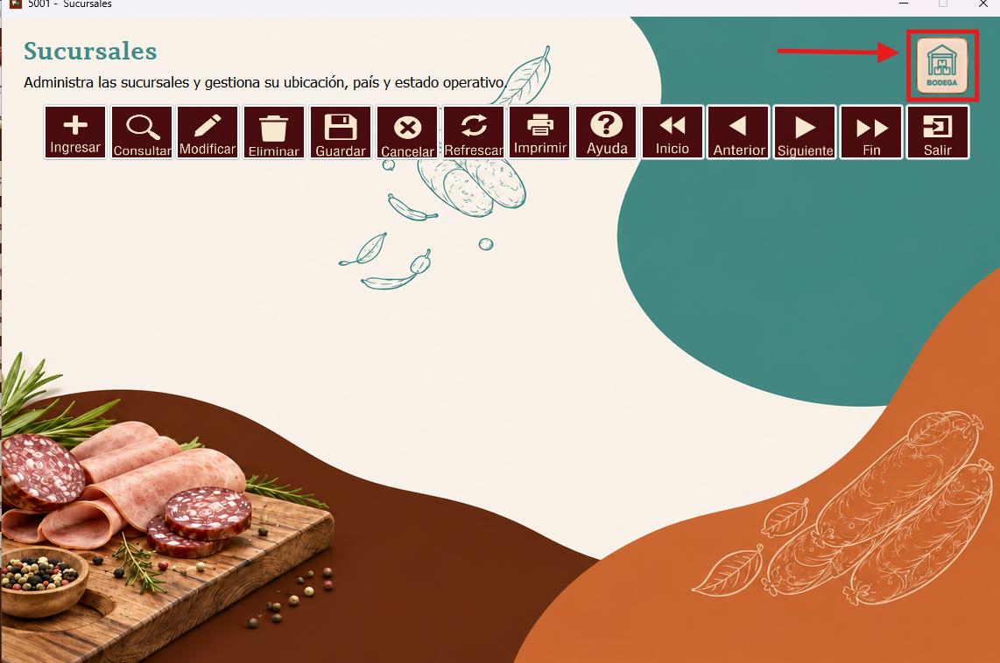
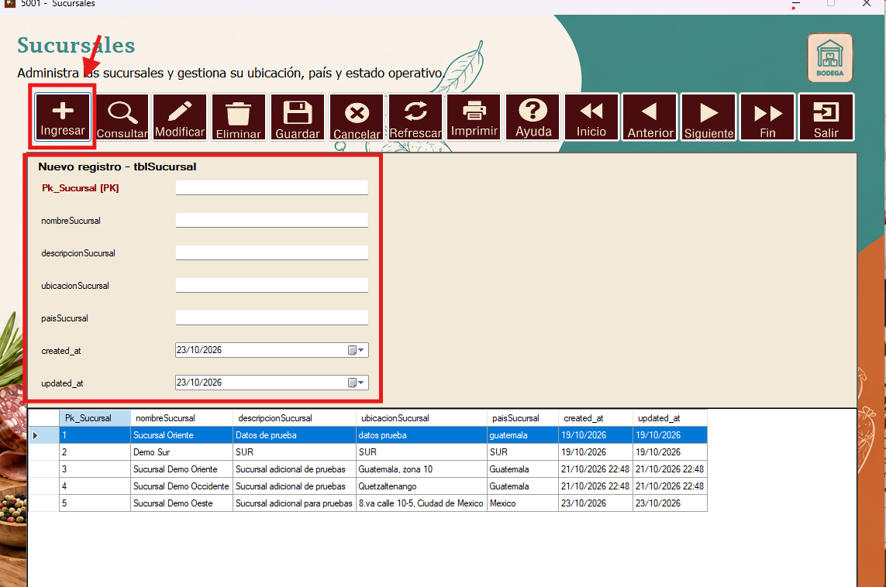
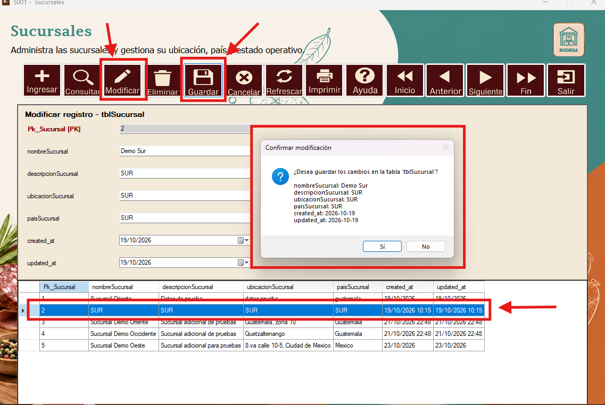
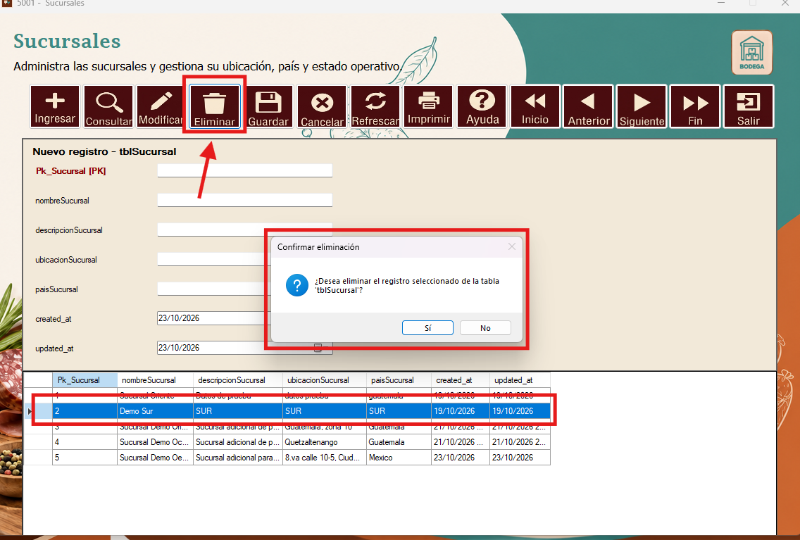
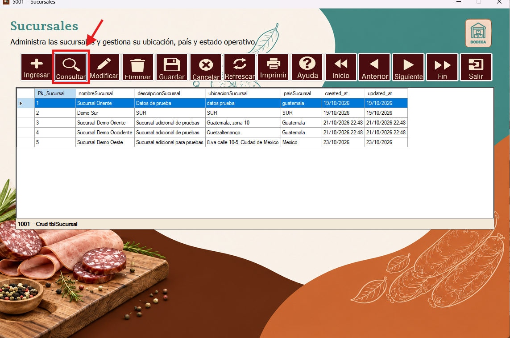
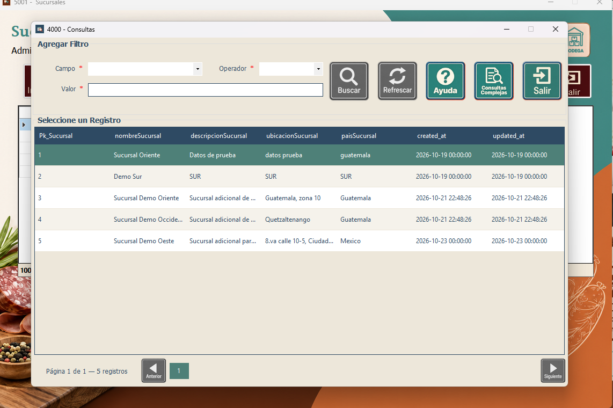
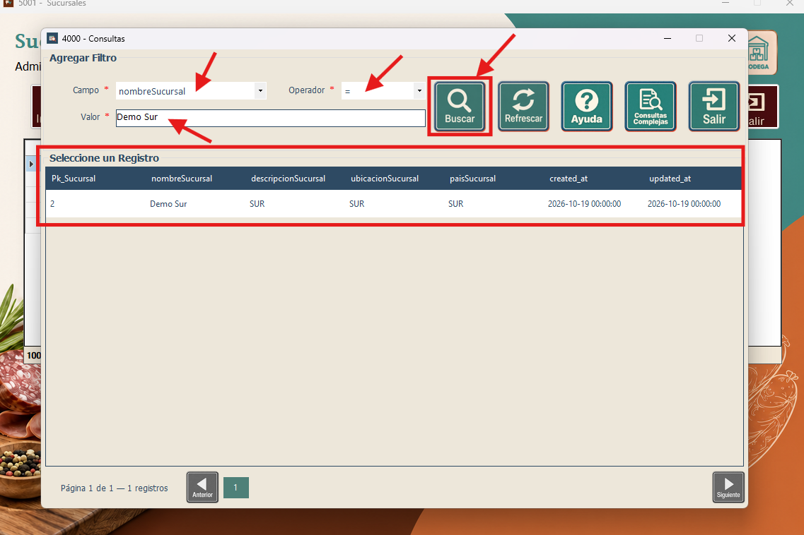
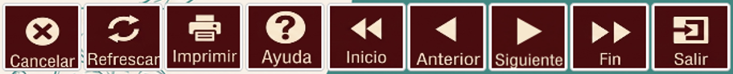

En la ventana de Sucursales se encuentra un botón en la parte superior derecha que dirige a la ventana de Bodega. Este acceso permite abrir el formulario relacionado para continuar con la administración de las bodegas.

Entre las opciones tendremos la de “Ingresar”, que despliega el formulario para Sucursales. En los campos correspondientes se ingresan los valores del nuevo registro y luego se presiona el botón “Guardar”.

Si se desea modificar algún valor, se debe seleccionar el registro, presionar el botón “Modificar”, realizar el cambio deseado y luego presionar “Guardar”. El sistema muestra una ventana para confirmar la modificación.

Si se desea eliminar un registro, se debe seleccionar la sucursal correspondiente y luego presionar el botón “Eliminar”. El sistema mostrará una ventana de confirmación para completar o cancelar la eliminación del registro seleccionado.

Para realizar una consulta de los registros, se utiliza el botón “Consultar”.

Este botón despliega una ventana donde se pueden realizar consultas especiales y encontrar de mejor manera el dato deseado.

Después de ingresar los valores deseados en los campos de consulta, se presiona el botón “Buscar”. Los registros que cumplen los criterios se muestran en la tabla de la parte inferior.

Los botones restantes permiten desplazarse entre los registros, refrescar los datos, imprimir un reporte, cancelar una acción o salir del formulario. También se cuenta con el botón “Ayuda” para acceder a información sobre el funcionamiento de estos botones.
